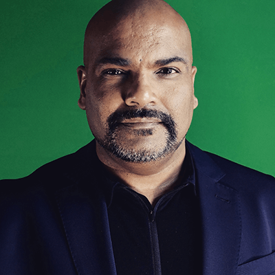
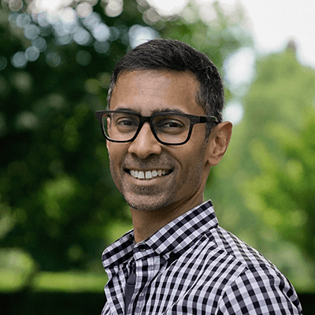

WHO ARE WE?
MIRA!’s three co-founders bring with us a wealth of complementary strengths, insights, and imagination to support this audacious vision. Nandini Ranganathan is a mathematician, technologist, and futurist focused on participatory innovation, education, and research with a long track record of launching successful and creative collaborative projects and spaces. Hanson Hosein is an expert communicator and leader in academia who partners with diverse stakeholders in tech and beyond. And Shankar Narayan is a lawyer, advocate, and poet who has been a trailblazer for a nationally-recognized community-centric approaches to technology.
Principals

Nandini Ranganathan Ph.D.,
is a mathematician, technologist and educator. Her work is focussed on the potential, implications, and impact of emerging technology in the world and in creating relevant innovative programs and credentials in creative and emergent technology and STEAM. Nandini designs interdisciplinary, participatory, cross-sector convenings and projects to address social, environmental, and technological challenges in creative ways. She was the founder and Executive Director of Make+Think+Code, an art/technology/society lab at the Pacific Northwest College of Art, where she was a Professor of Liberal Arts and Media Arts. She is an affiliate faculty member at Portland State University and has previously served on the faculty at Reed College, Washington State University (Vancouver), and University of Texas. Nandini has a PhD. and M.S. in Mathematics from the University of Michigan and an A.B. in Mathematics from Wellesley College. She is deeply passionate about increasing access to and opportunities in technology and design.

Hanson Hosein
is a trusted convener and education leader. He is the Co-Founder of the Communication Leadership master's program at the University of Washington and the President of HRH Media Group LLC, a media production and communications strategy firm that has advised organizations such as REI, Factal, Microsoft, Tableau Software, and the King County Prosecuting Attorney's Office. Hanson's multimedia storytelling is documented in his book “Storyteller Uprising” : as an Emmy and Overseas Press Club award-winning journalist for NBC News, a solo TV war correspondent with MSNBC and CBC and as a documentary director whose “Independent America” films have been streamed and broadcast worldwide. While at the UW, Hanson has also been recognized as Seattle's "Most Influential" as he engages publicly with the region's leaders on-camera and on-stage. He's the host of the university's "Co-Existing with COVID-19" Public Lectures series, and leads conversations on misinformation in partnership with the UW Center for an Informed Public. He has law degrees from McGill University and the University of Paris, and a master's in journalism from Columbia University.

Shankar Narayan
is an advocate, attorney, and changemaker for fair, accountable, and community-centric technology. Shankar was previously Technology and Liberty Project Director at the ACLU of Washington. There, he founded the groundbreaking Tech Fairness Coalition, which helped pass landmark technology laws and campaigned for vendors to build tech in ethical and community-centric ways. For this work, Shankar received the 2018 Roberto Maestas Legacy Award from El Centro de la Raza. Previously, Shankar was Legislative Director at ACLU-WA, where he led efforts to pass legislation to achieve marriage equality, restore voting rights, enforce non-discrimination laws, improve police accountability, defeat gang legislation, and protect privacy, among others. Shankar has also been Policy Director at OneAmerica and a technology lawyer at K&L Gates. He teaches law, technology, and ethics at Seattle University School of Law. Shankar holds a B.S. from Bates College, a J.D. from Yale Law School, and an M.P.A. from Harvard's Kennedy School of Government. An immigrant, Shankar grew up in the Soviet Union, U.S., Maldives, India, Yugoslavia, Thailand, and Russia. A poet, he is a four-time Pushcart Prize nominee and a recipient of awards and fellowships from Kundiman, Hugo House, Flyway, Paper Nautilus, Jack Straw, and 4Culture.
Team
The design, development, visuals, and branding for MIRA! were created by the following contributors: Stephen Lee, Alanna Risse.